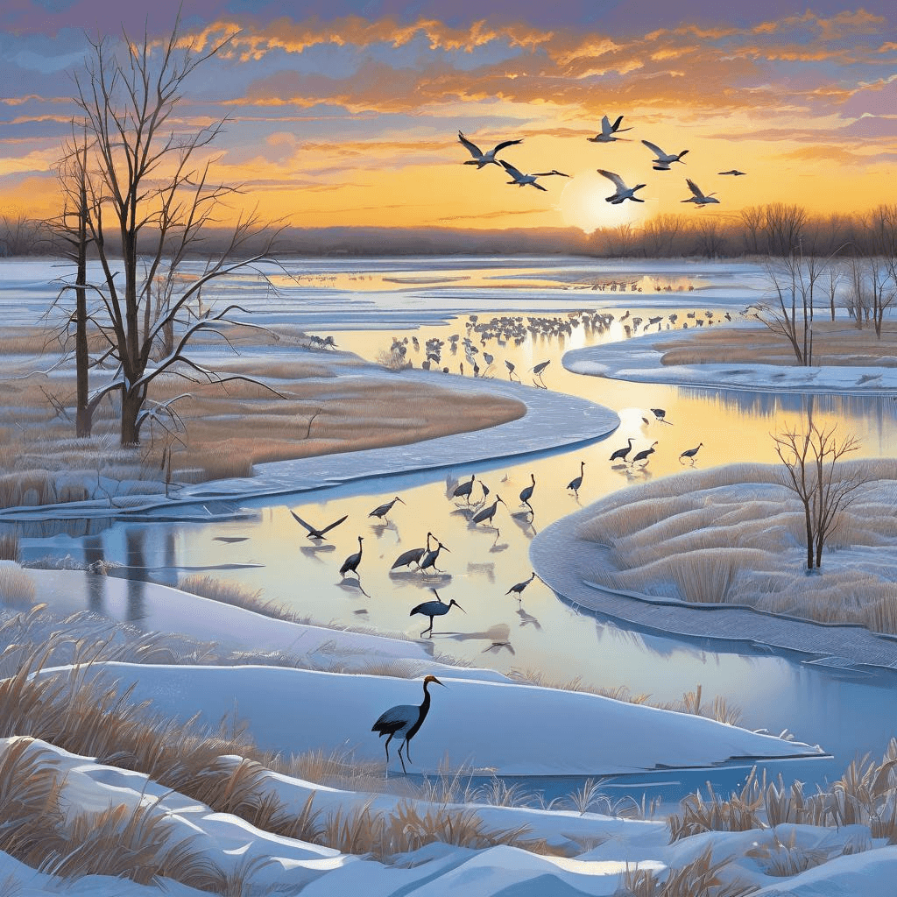
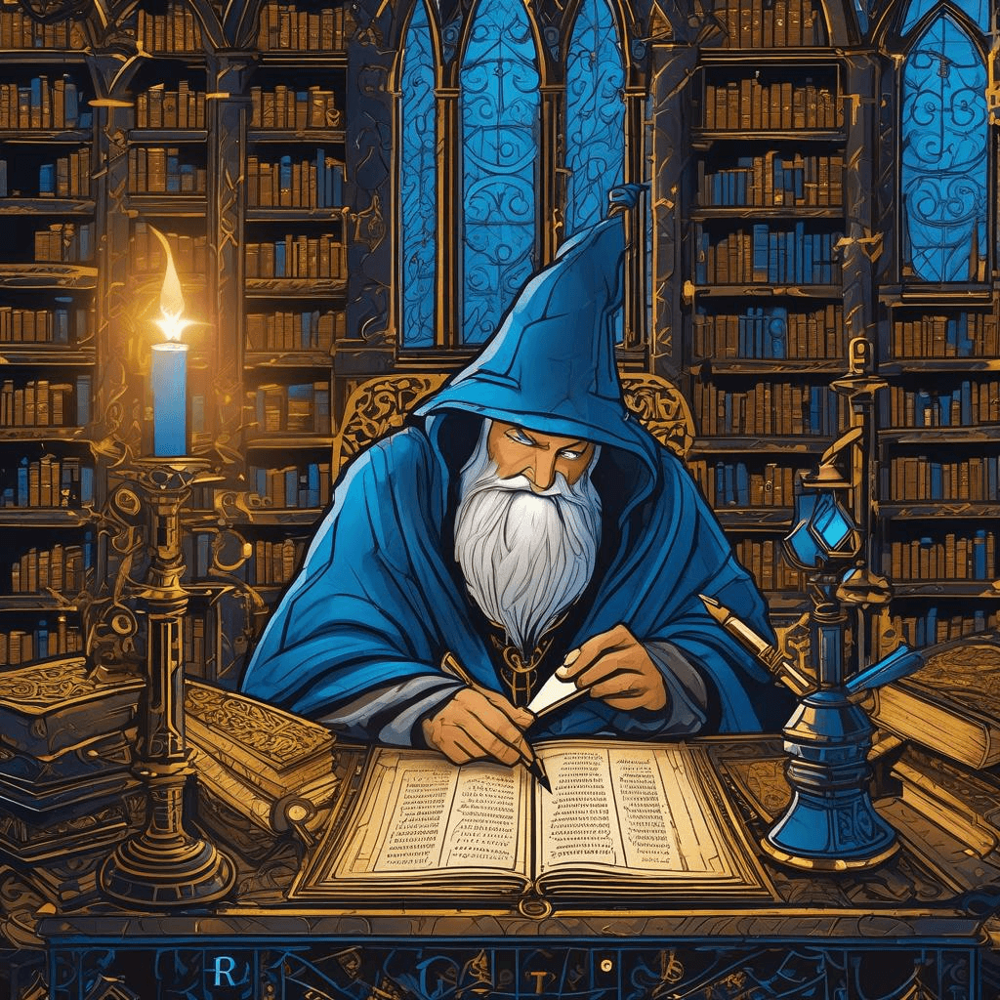

Chronicle Entry
February 3, 2026
The Third Day of February brings dire lessons in the volatility of mystical tokens, dear subjects! The great Bitcoin enchantment hath plummeted six point seven percent in but a single rotation of the sun, whilst the Ethereum sorcery fell even harder at nine point one percent! Verily, this reminds all who dabble in such arcane exchanges that true wealth springs from tangible endeavors, not ephemeral digital conjurations. Mayhaps 'tis time to redirect one's silver toward proper sporting implements and fishing tackle!
Speaking of noble pursuits, most excellent chronicles arrive from the frozen kingdoms to our north and east! The ice fishing warriors upon the glacial lakes of our northeastern territories, Bitter and Enemy Swim and Roy, report magnificent catches of perch and walleye through their augured holes. Even more spectacular, the great migration of sandhill cranes hath commenced along the Platte River southward in Nebraska, where half a million of these majestic fowl gather in nature's grandest spectacle! This is the true magic of our realm, not fickle digital tokens.
✨ Crypto Enchantment Collapse
Meanwhile, the apprentice sorcerers of the Silicon Valley have conjured forth new automatons they call agentic coding, now embedded within the Apple Xcode scrolls through version twenty-six point three. These mechanical scribes from Anthropic and OpenAI promise to write incantations without human guidance, much as I myself transcribe these very chronicles through the mystical glowing rectangle before me! Yet I wonder if such automation serves mankind or merely creates more idle mages who've forgotten the ancient art of manual spell-crafting.

✨ Crane Migration Ice Fishing Magic
The Missouri River reservoirs continue their winter bounty, reminding us that patient anglers who brave the cold shall be rewarded with full creels! Truly, these are the enduring values that sustain our Kingdom of Dakota whilst distant markets rise and fall like the tides.

✨ Agentic Coding Automatons